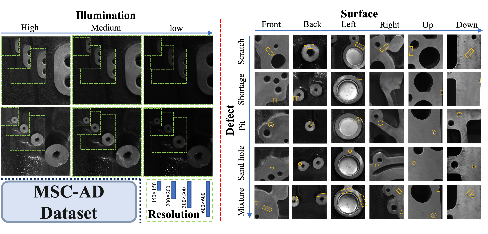
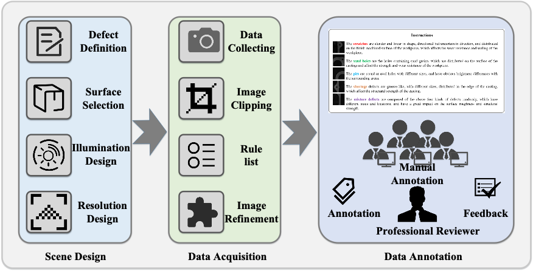
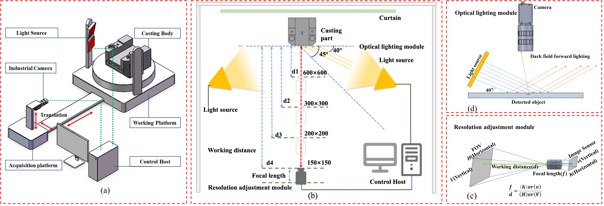
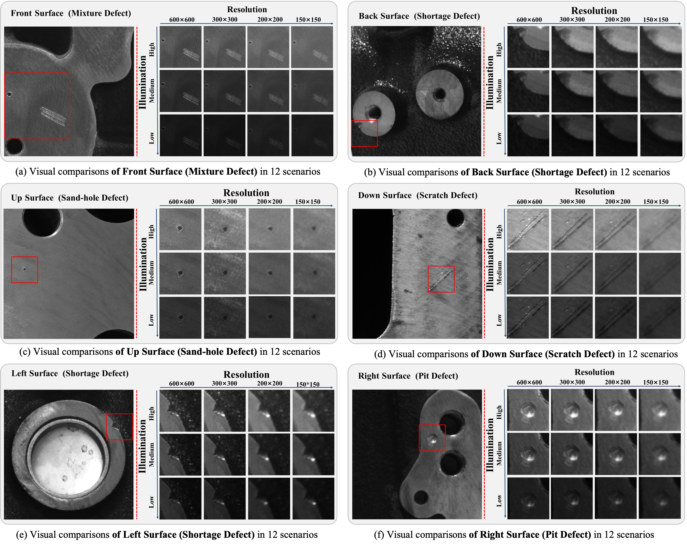

MSC-AD: A Multi-Scene Unsupervised Anomaly Detection Dataset for Small Defect Detection of Casting Surface

|
|
An overview of MSC-AD dataset built
in a standard imaging system. It covers 12 imaging scenes,
a combination of low-to-high three illuminations and four
resolutions from 150×150 to 600×600 pixels (Left of red dotted line),
and six types of casting surfaces include five kinds of defects
(Right of red dotted line)
|

Download
|
Abstract
Intelligent detection of product surface defects in the industrial scene
is the key to ensuring product quality. On general benchmarks, current unsupervised anomaly detection
techniques have achieved significant success. When used in complex industrial environments
(e.g., large industrial components with minute defect), the model needs to be able to adapt
to different imaging scenarios (e.g., illumination and resolution) and accurately detect
and localize anomalies, but its performance is still far from satisfactory. Besides,
the complex and unstable optical lighting environment for collecting such data poses
major challenges in establishing unified benchmarks for optical lighting and imaging
resolution in defect detection. To fill this gap, we build a standard imaging
system-based multiscene unsupervised anomaly detection dataset, coined as MSC-AD.
In particular, it provides 12 imaging scenes, i.e., a cross combination of
low-to-high three illuminations and 150×150 to 600×600 four resolutions,
in which six types of large casting surfaces with different structures include
five kinds of defects with sample-level and pixellevel precise ground truth.
We systematically investigate representative baseline methods and empirical analysis
on this dataset to obtain a number of interesting findings, e.g. how to detach from
distinctly different imaging scenes, and how to distinguish between subtly normal-anomaly
classes. To the best of our knowledge, MSC-AD is the first multi-illumination,
multi-resolution, multi-surface and multidefect dataset built in a standard imaging system.
The MSCAD dataset and baseline codes will be available.
MSC-AD construction

|
|
An overview of MSC-AD construction.
|
Multi-scene Image Acquisition System

|
|
Overview of multi-scene image acquisition system.
(a) a prototype of a multi-scene image acquisition system.
(b) Schematic diagram of multi-scene image acquisition system.
(c) Schematic diagram of the multi-resolution adjustment module.
(d) Design schematic diagram of optical lighting module.
|
12 Scenarios

|
|
Visualization comparisons of different surface defects in 12 scenarios.
|
Empirical Studies and Analysis
(1) Analysis of different resolution conditions.
(2) Analysis of different illumination conditions.
(3) Analysis of different surfaces.
Qualitative results

|
|
Qualitative results for anomaly localization on MSC-AD dataset.
(a) Qualitative analysis results for anomaly localization under
different resolutions.
(b) Qualitative analysis results for anomaly localization under
different illuminations.
(c) Misjudged results for normal samples.
(d) False positive results for anomaly samples.
|
{kind=link}
{kind=link}
{kind=link}
{kind=link}